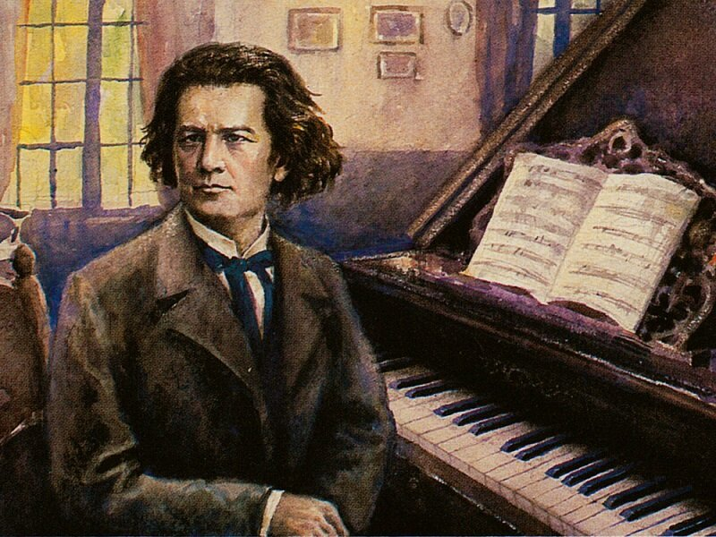
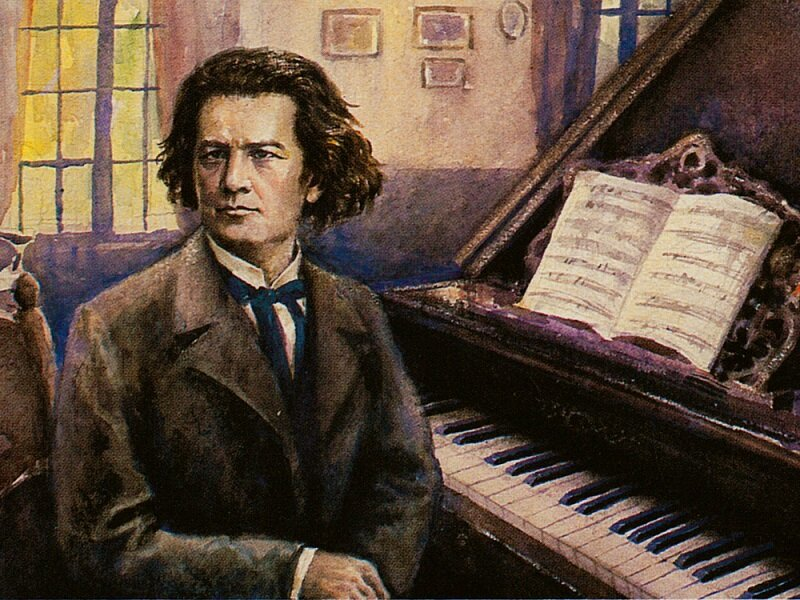
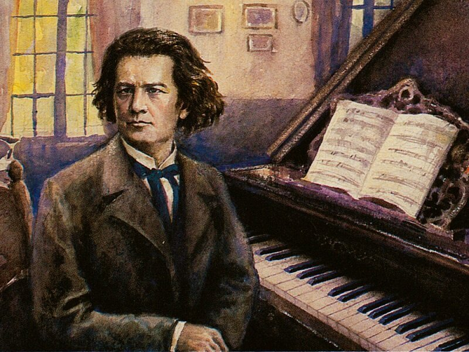

Welcome to a concise and profound collection of composers and their stories. This Websites purpose is to inform those who love works of specific classical composers but dont know about their lives and the intricicies and stories that lie beneath the sheet music.

Click here to visit Google.
This is a link that looks like a button.